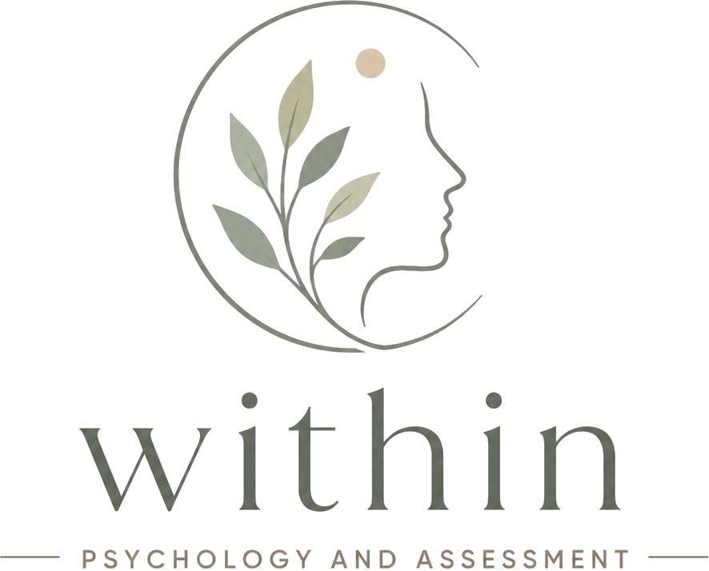

Contact Us
Appointments: In person appointments are held at Unify Health, 14 Wellness Way, Springfield 4300 with telehealth appointments available Australia wide.
Phone: 0483 642 098. If our office is unattended, please leave a voicemail or send a text message and we'll get back to you within two business days.
Email: hello@withinpsych.com.au
Referrals: Please prepare a referral letter to Leah Owen, Within Psychology and Assessment, and a Mental Health Treatment Plan for your client. Email the letter to hello@withinpsych.com.au and we will contact your client to schedule an initial appointment. We will confirm your client's attendance at their first session and send you progress reports and updates, as required.
14 Wellness Way, Springfield Central, QLD 4300
Important: Crisis Support
Within Psychology and Assessment does not provide crisis support. If you or someone else is in immediate danger, please call 000 or access one of the services below:
- Lifeline (24/7): 13 11 14 or lifeline.org.au
- Suicide Call Back Service (24/7): 1300 659 467 or suicidecallbackservice.org.au
- Beyond Blue: 1300 22 4636 or beyondblue.org.au
- Kids Helpline (24/7): 1800 55 1800 or kidshelpline.com.au